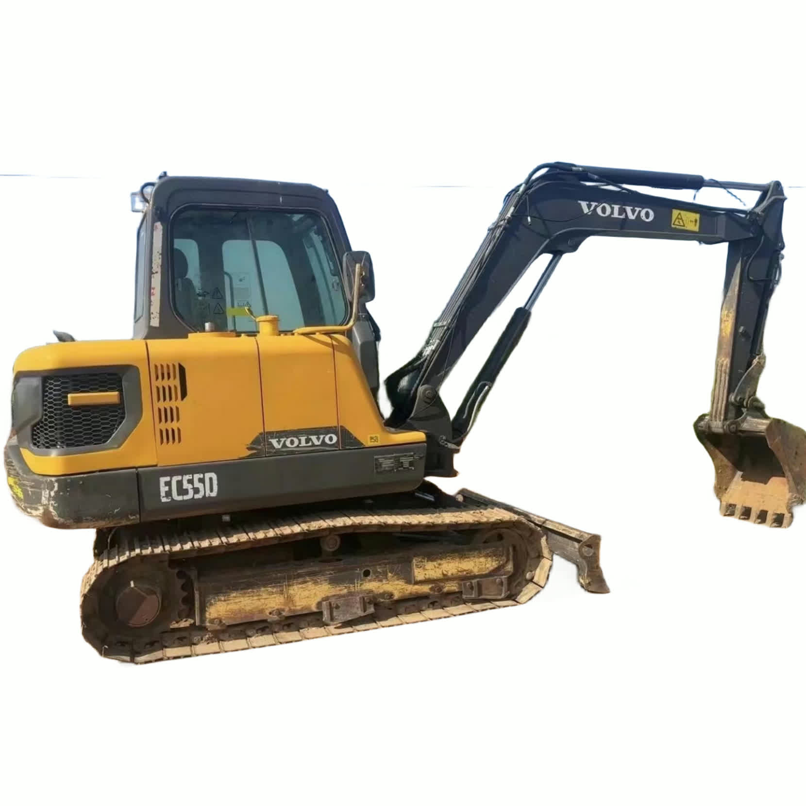

Refurbished Volvo EC55 Excavator
The Volvo EC55 is a highly regarded compact excavator designed to tackle a wide variety of tasks, from construction and landscaping to utility work and small-scale digging projects. With its compact size, impressive digging capabilities, and strong fuel efficiency, the EC55 offers versatility and performance in tight spaces.
Honestly, it's almost impossible to buy a brand new excavator from China. They either don't exist or are made in China. If a Chinese seller tells you their Caterpillar/Komatsu/Volvo/Kobelco/Hitachi is brand new, they're lying. Therefore, a refurbished excavator is your best bet.

Here are the detailed specifications for a refurbished Volvo EC55B Pro excavator:
Operating Weight and Dimensions
- Operating Weight: 5,300–5,700 kg
- Transport Length: ~5.55 meters
- Transport Width: ~1.92 meters
- Transport Height: ~2.55 meters
- Tail Swing Radius: ~1.65 meters
- Ground Clearance: ~350 mm
- Track Width: 400 mm standard
Engine and Powertrain
- Engine Model: Volvo D3.1A (Tier 2 compliant)
- Rated Power Output: ~38.8 kW (52 hp) @ 2,200 rpm
- Maximum Torque: ~200–220 Nm
- Fuel Tank Capacity: ~80–90 liters
- Travel Speed: 2.6–4.8 km/h
- Swing Speed: ~9.5 rpm
- Gradeability: Up to 30°
Hydraulic System
- Main Pump Type: Variable displacement axial piston pump
- Flow Rate: ~2 × 60–70 L/min
- System Pressure: Up to 24.5 MPa
- Hydraulic Oil Capacity: ~70–80 liters
- Boom Cylinder Bore: ~90 mm
- Arm Cylinder Bore: ~75 mm
- Bucket Cylinder Bore: ~65 mm
Performance Metrics
- Bucket Capacity: 0.11–0.14 m³ (SAE heaped)
- Max Digging Depth: ~3.7–3.9 meters
- Max Reach (Horizontal): ~5.9–6.1 meters
- Max Dump Height: ~3.9–4.1 meters
- Bucket Digging Force: ~38–40 kN
- Arm Digging Force: ~25–28 kN
Cab and Operator Features
- Cab Type: ROPS/FOPS certified (canopy or enclosed)
- Display: Analog gauges or basic LCD monitor
- Controls: Pilot joystick controls with auxiliary hydraulic circuit
- Comfort: Adjustable seat, optional air-conditioning
- Visibility: Wide glass area, LED work lights
Smart Features and Efficiency
- Fuel Efficiency:
- Mechanical fuel injection
- Auto idle and engine shutdown
- Emissions Control: Tier 2 compliant (no DPF/SCR)
- Transportability: Easily trailerable under 6-ton class
Attachments Compatibility
- Standard Bucket: 0.11–0.14 m³
- Optional Tools: Hydraulic breaker, auger, compactor, ripper
- Quick Coupler: Manual or hydraulic options available
Refurbishment Scope
Refurbished EC55 units typically include:
- Engine Overhaul: Cylinder head, injectors, turbo, seals
- Hydraulic Restoration: Pump recalibration, valve block testing, hose replacement
- Electrical Diagnostics: Monitor, sensors, wiring harness
- Cab Reconditioning: Seat, joysticks, HVAC, repainting
- Structural Repairs: Boom/bucket welding, bushing replacement, undercarriage rebuild
Overview of the Volvo EC55 Excavator
The Volvo EC55 is a compact and efficient machine that delivers solid performance for various types of excavation, trenching, and earthmoving jobs. It's designed for jobs where space is limited but power and precision are still required. The EC55 offers superior digging depth, reach, and lifting capabilities compared to other compact machines in its class.
Key Specifications of the Volvo EC55
-
Operating Weight: Approximately 5,500 kg (12,125 lbs)
-
Engine Power: Around 40 kW (53.5 hp)
-
Max Digging Depth: Up to 4.4 meters (14.4 feet)
-
Max Reach: Approximately 6.2 meters (20.3 feet)
-
Bucket Capacity: Ranges between 0.1 to 0.2 cubic meters (3.5–7.1 cubic feet)
-
Fuel Tank Capacity: About 80 liters (21 gallons)
-
Travel Speed: Up to 5.6 km/h (3.5 mph)
The EC55 is ideal for working in small spaces, especially where larger machines might struggle. It offers excellent maneuverability, making it perfect for urban construction sites, roadwork, and utility projects.
Engine and Fuel Efficiency
The Volvo EC55 features a highly efficient diesel engine that is designed for low fuel consumption while maintaining the power needed to complete demanding tasks.
-
Fuel Efficiency: One of the main advantages of the EC55 is its excellent fuel efficiency, which helps contractors keep operating costs low. The machine is engineered to deliver high power output with minimal fuel consumption, making it ideal for long days on the job.
-
Reduced Emissions: The engine in the EC55 is designed to meet the latest emission standards, ensuring minimal environmental impact. This makes it a good choice for projects in areas with strict environmental regulations.
-
Reliable Power: The EC55 is powered by a robust engine that consistently delivers the required power and torque, ensuring smooth operation throughout the workday.
Hydraulic System and Performance
Volvo is known for its high-performance hydraulic systems, and the EC55 is no exception. The hydraulic system plays a key role in the machine's ability to lift, dig, and perform various tasks with precision.
-
Hydraulic Efficiency: The EC55’s hydraulic system offers load-sensing technology, which adjusts the flow of hydraulic fluid based on the machine's load. This results in improved fuel efficiency and enhanced productivity.
-
Precise Control: Whether you’re working on lifting, digging, or other tasks, the EC55’s hydraulic system ensures precise control, even under heavy loads. This precision is essential for projects that demand accuracy, such as trenching and grading.
-
Attachment Versatility: The EC55 can be fitted with a variety of attachments, such as buckets, augers, grapples, and breakers, allowing it to tackle a wide range of tasks from demolition to earthmoving.
Durability and Build Quality
Volvo excavators are known for their durability, and the EC55 is no different. The machine is designed to withstand tough conditions and offer long-term reliability, making it an excellent choice for contractors who rely on their equipment day in and day out.
-
Undercarriage: The EC55 features a sturdy undercarriage designed for long-lasting performance in rugged environments. The tracks and rollers are engineered to provide excellent traction and stability, even on uneven ground.
-
Heavy-Duty Construction: The machine's frame and boom are built from high-strength steel, designed to handle tough working conditions. The boom and arm design ensure the EC55 can withstand the stress of frequent use, even in demanding applications.
-
Low Maintenance: The EC55 is engineered to require minimal maintenance. With proper care, this excavator can provide years of service, making it a great long-term investment.
Operator Comfort and Safety
Volvo takes operator comfort and safety seriously, and the EC55 is designed to provide a comfortable and secure working environment for the operator.
-
Ergonomic Cab Design: The EC55 features a spacious and well-designed cab with an adjustable seat, clear visibility, and intuitive controls. The cab design ensures that operators can work long hours with minimal fatigue.
-
Safety Features: The EC55 is equipped with standard safety features such as ROPS (Roll-Over Protective Structure) and FOPS (Falling Object Protective Structure), ensuring that operators are safe in the event of an accident. The cab also offers excellent visibility, reducing the risk of accidents and ensuring a clear view of the work area.
-
Low Vibration and Noise: The EC55 has been designed to minimize vibration and noise, creating a more comfortable working environment. This reduces operator fatigue and improves productivity over long periods of operation.
Refurbished Volvo EC55: Cost-Effective and Reliable
Opting for a refurbished Volvo EC55 excavator is an excellent way to get a high-quality machine at a lower price. Refurbished machines undergo a thorough inspection and restoration process to ensure they meet factory standards, providing buyers with a like-new machine without the high price tag of a new model.
-
Lower Cost: Refurbished excavators offer significant savings compared to new models, making them an attractive option for contractors on a budget or those expanding their fleet.
-
Restored to Factory Specifications: Refurbished units are carefully restored to factory specifications, ensuring that all components, including the engine, hydraulics, undercarriage, and electrical systems, are in top working condition.
-
Warranty and After-Sales Support: Many refurbished Volvo EC55 excavators come with a warranty, offering added peace of mind. Additionally, after-sales support and parts availability ensure that operators can access help and replacement parts if needed.
Maintenance Tips for the Volvo EC55
To ensure that your Volvo EC55 continues to perform at its best, regular maintenance is essential. Here are some tips to keep your machine running smoothly:
-
Engine Maintenance: Regularly check engine oil levels and replace oil filters at the recommended intervals. Ensure that air filters are kept clean to prevent engine wear.
-
Hydraulic System Care: Regularly inspect the hydraulic fluid levels and check for any leaks. Keeping the system clean and free of contaminants ensures optimal performance.
-
Undercarriage Checks: Inspect the undercarriage regularly for wear and tear. Ensure that the tracks are properly tensioned and free of debris.
-
Cab and Safety Inspections: Check the safety features of the cab, including ROPS and FOPS, and ensure that all glass and visibility points are clean and unobstructed. This ensures that the operator has a clear view of the work area at all times.
Conclusion
The Volvo EC55 is a compact, versatile, and powerful excavator that delivers outstanding performance for a variety of tasks. Its fuel-efficient engine, strong hydraulics, and durable build make it an ideal choice for contractors looking to tackle projects in tight spaces. A refurbished Volvo EC55 excavator offers an excellent opportunity to access top-tier equipment at a lower price, with restored performance and a warranty for peace of mind.
By maintaining the machine properly, contractors can ensure that the EC55 provides years of reliable service, making it a wise investment for any business. Whether you’re digging, lifting, or grading, the EC55 offers the versatility, power, and durability you need to get the job done efficiently.
Our Commitment
- 2 years / 4000 hours warranty.
- EPA certified.
- No sweatshop labor.
Contacts

- [email protected]
- Youtube Instagram Facebook
- Navigation: G206 (Sishu Bridge) in Changfeng County, Hefei City, Anhui Province, 200 meters north to the east